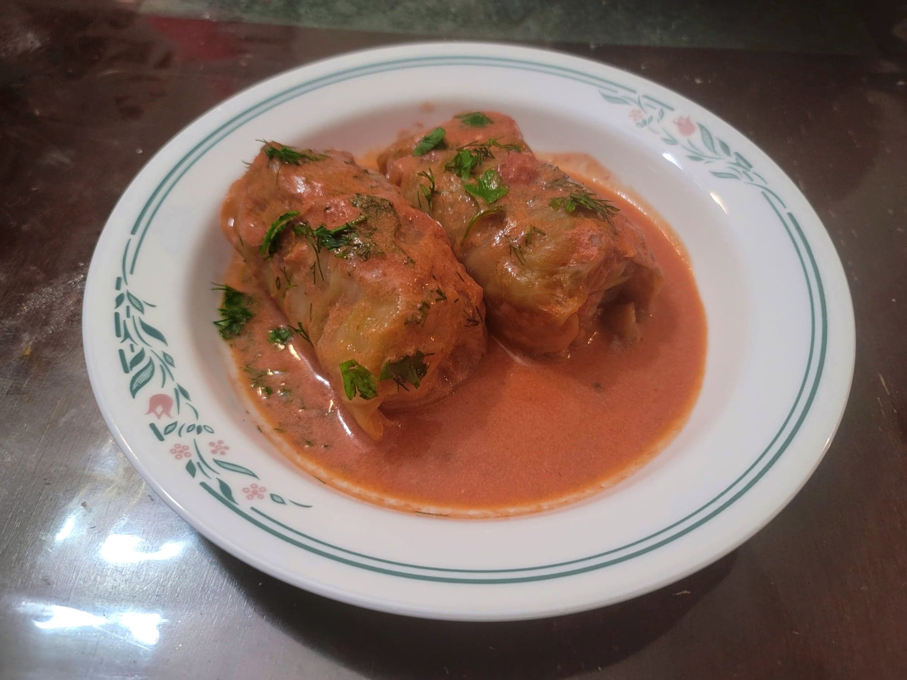

Golubsti

Ingredients:
Golubsti:
- 1 lb Ground Pork
- 1 lb Ground beef, 95% lean
- 1/2 cup Rice, uncooked
- 2 tbsp Olive oil
- 1 Onion, diced
- 1/4 cup (25 g) Parsley, chopped
- 2 Carrots, grated
- 2 tsp Salt
- 1/2 tsp Black pepper
Sauce:
- 1 cup Chicken stock
- 1 cup Crème fraîche or Sour cream
- 2 cups Crushed tomatoes or Passata
- 2-3 Bay leaves
- Salt, to taste
- Black pepper, to taste
- Parsley, chopped, to garnish
- Dill, chopped, to garnish
Instructions:
- Cabbage boiling method: Bring a large pot of water to a boil. Prepare the cabbages by coring them and placing them into the boiling water. Remove the outer leaves as they continue to soften until there are no leaves left. Reserve the leaves.
Cabbage freezing method: Place the cabbages in a freezer and let freeze completely, 1-2 days. Then let thaw completely. The cabbage will have completely softened. Carefully remove the leaves and reserve.
- Bring a large pot of salted water to a boil. If using the cabbage boiling method, salt can be added to the cabbage water and it can be reused. Add the rice and let parboil for about 5 minutes, or until about al dente.
- Add the olive oil to a pan and bring to medium heat. Sauté the onion for 5-7 minutes or until soft. Reserve.
- In a large bowl, combine well the pork, beef, onion, rice, carrots, parsley, salt, and pepper.
- Preheat the oven to 350 degrees Fahrenheit. In a separate bowl, whisk together the chicken stock, sour cream, tomatoes, salt, and pepper.
- On a flat work surface, lay down a cabbage leaf. Place 2 tbsp of the filling onto the wider base of the cabbage leaf and the roll to close like a burrito. Repeat until the filling and cabbage leaves are finished.
- Into a very large baking dish or a dutch oven, place about a cup of the sauce. Start to stack the cabbage rolls into the baking dish. Once halfway through, add in the bay leaves and pour in about 1/3 of the remaining sauce. Place the rest of the cabbage rolls and then pour the remaining sauce over them.
- Cover and place into the oven for 1 hour. Then remove the lid and cook for another 30 minutes. Remove from the oven and serve immediately, garnished with parsley, dill, and optionally more sour cream.